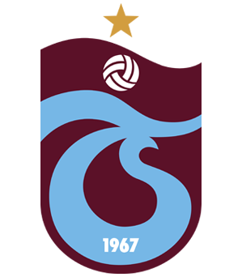

Takımımız
Trabzonspor, Türkiye'nin Trabzon şehrinin spor kulüplerinden biridir ve 1967 yılında kurulmuştur. Trabzonspor, Türkiye'nin en başarılı futbol kulüplerinden biri olarak bilinir ve büyük bir taraftar kitlesine sahiptir.İşte Trabzonspor hakkında genel bilgiler:
Kuruluş ve Renkler:Trabzonspor, 2 Ağustos 1967 tarihinde Trabzonlu spor severler tarafından kurulmuştur. Kulübün renkleri bordo-maviden oluşur ve takma adı "Bordo-Mavililer"dir.
Başarılar:Trabzonspor, Türkiye'nin en başarılı futbol kulüplerinden biridir. Süper Lig'de 6 kez şampiyon olmuş ve 8 kez Türkiye Kupası'nı kazanmıştır. Ayrıca, 5 kez Türkiye Süper Kupası'nı müzesine götürmüştür. Trabzonspor, 1976-1977 sezonunda UEFA Kupası'nda yarı finale çıkarak büyük bir başarı elde etmiştir.
Hüseyin Avni Aker Stadyumu:Trabzonspor maçlarını Hüseyin Avni Aker Stadyumu'nda oynamaktadır. Bu stadyum, Trabzon şehrinin simgelerinden biri haline gelmiştir. Ancak, Trabzonspor'un yeni stadı olan Medical Park Stadyumu'nun da inşa edilme süreci devam etmektedir.
Taraftar Kitlesi:Trabzonspor'un tutkulu bir taraftar kitlesi vardır. Trabzonspor taraftarları, "Bordo-Mavi Şimşekler" olarak bilinir ve maçlarda takımlarını coşkuyla desteklerler. Taraftarlar, Trabzonspor'a duydukları sevgiyi ve bağlılığı her fırsatta gösterirler.
Gençlik Akademisi:Trabzonspor, genç yeteneklerin keşfedilmesi ve geliştirilmesi için önemli bir Gençlik Akademisi'ne sahiptir. Bu akademi, genç futbolculara eğitim ve antrenman imkanları sunarak geleceğin yeteneklerini yetiştirmeyi hedeflemektedir.
Trabzonspor, Türk futbolunda köklü bir geçmişe sahip olan ve büyük bir taraftar kitlesi tarafından desteklenen bir kulüptür. Başarıları ve tutkulu taraftarlarıyla Türk futbolunda önemli bir yer edinmiştir.